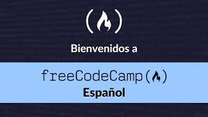
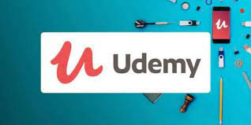

En cualquiera de estas 3 paginas podras descargar fotos gratis con solo registrarte
Tiene un gran banco de imagenes gratis para utilizar en diferentes paginas web.
En Cilsa estoy cursando Introduccion al desarrolo web con el profesor David Ginaca los dias viernes a partir de las 14hs.
Se imparte Html 5 , Css 3 ,Git y GitHub con la cual se podra hacer paginas web estatica , el proyecto final es hacer un Curriculum Vitae con estas tecnologias y poder subirlo al repositorio remoto para asi compartirlo con los recruiter it.
En Free Code Camp se puede cursar diferentes cursos con diferentes lenguajes de programacion totalmente gratis.
Lo interesante de esta plataforma es que se puede cursar a tu ritmo es ideal para gente que trabaja y no puede conectarse en un horario fijo.Al terminar el curso elegido cuenta con entrega de certificado
En Udemy se puede seleccionar diferentes cursos gratis o pagos para aprender a programar,algunos cuentan con certificados.
Tambien se puede completar el curso elegido en el tiempo que uno le invierta ya que las clases son grabadas y estan en la plataforma guadadas.